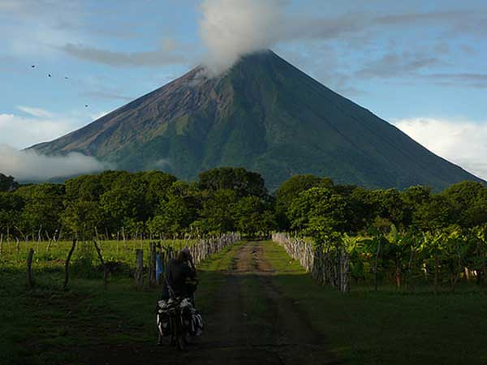
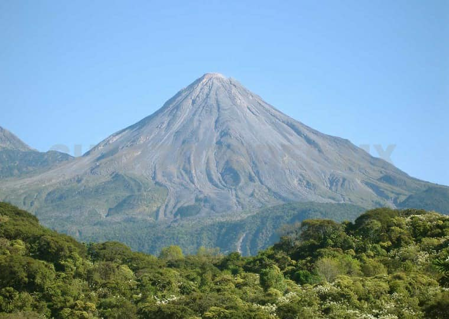
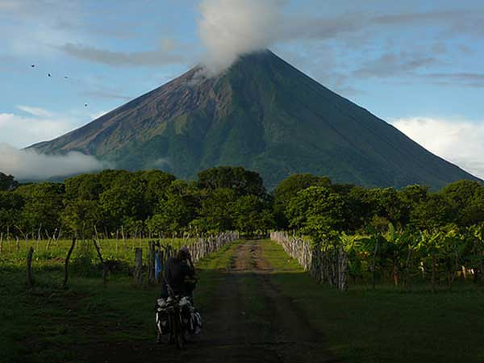
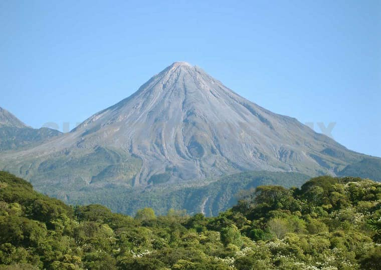

El Chichonal o Chichón, situado en los municipios Francisco León y Chapultenango en la región montañosa del estado a unos 25 kilómetros de Pichucalco y 75 kilómetros tanto de San Cristóbal de las Casas, como de Villahermosa, capital de Tabasco y cuya última erupción fue en 1982.

Tacaná, que está justo en el límite natural de México con Guatemala, al noreste de Tapachula, la última erupción fue en 1986.
 



Los volvanes en Chiapas permanecen inactivos. de acuerdo a los parametros con los que los investigadores miden los volcanes localizados en la identidad estos se mantienen en un margen que no señalan alguna anormalidad, por que no existe riesgo de desastre.